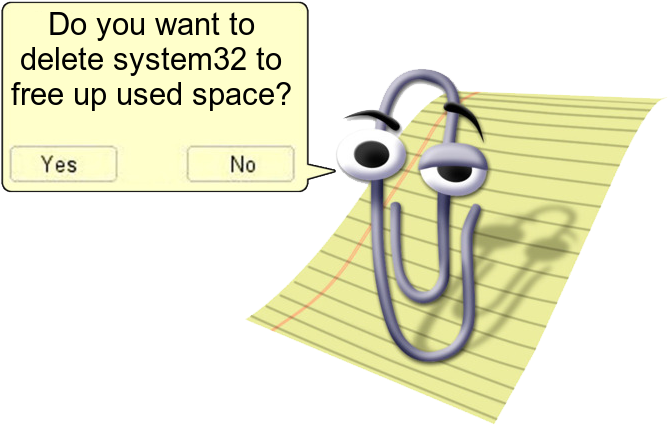
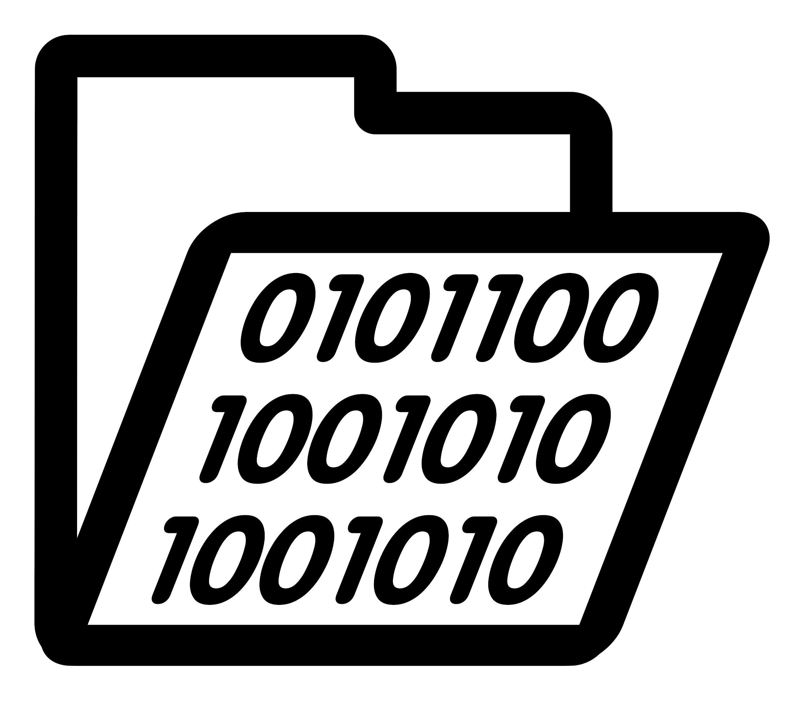
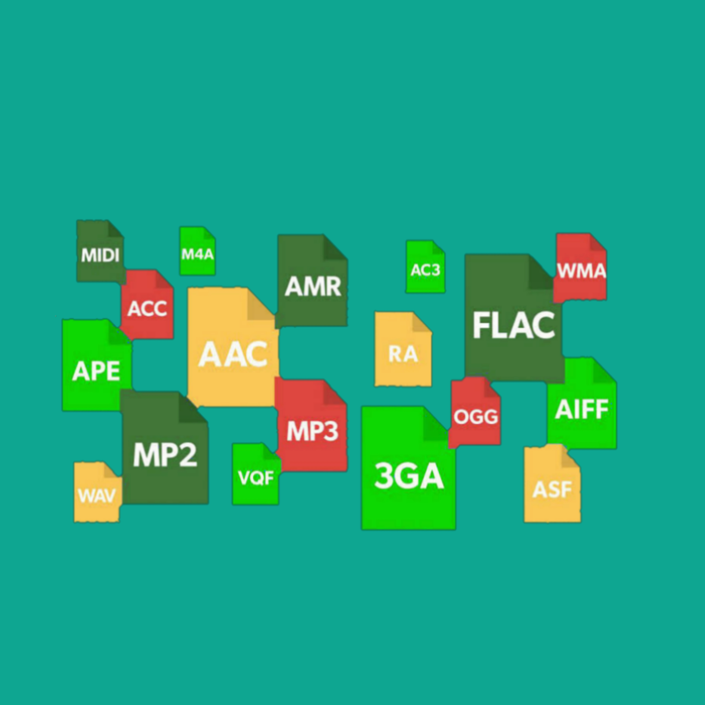
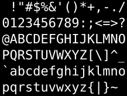
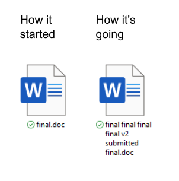
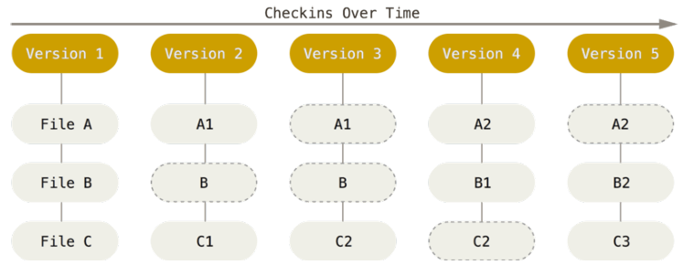
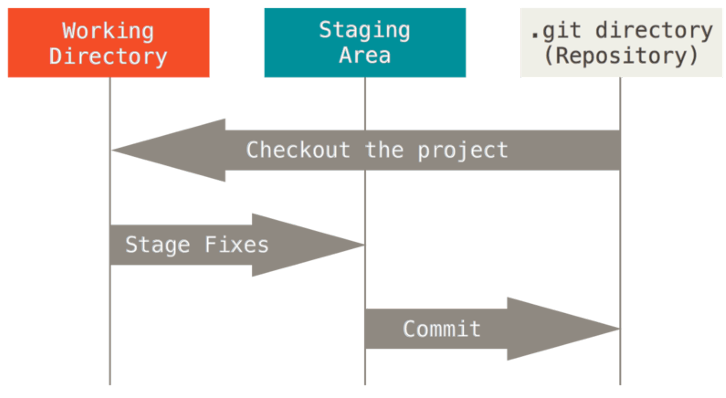

Archivos

¿Qué es un archivo?
| Bit | Archivo |
|---|---|
 |
|
Unidad mínima de información en computación y telecomunicaciones (acrónimo del inglés Binary Digit). [[r1]] |
Un archivo o fichero es un conjunto de bits guardados de forma ordenada. [[r2]] |
¿Por qué los archivos son como son?
La forma en la que hoy en día organizamos nuestros archivos fue heredada de los primeros sistemas operativos que se adoptaron ampliamente en ambientes comerciales.
Un sistema operativo es simplemente un entorno de utilidades muy grande que nos permite a nosotros dar ordenes al computador sin necesidad de hablar su idioma. Los sistemas operativos modernos siguen una convención heredada compartida para clasificar todos los archivos. Tomemos como ejemplo el siguiente archivo:
C:\Users\jrosas3\AppData\Local\Programs\Git\LICENSE.txtSus partes serían:
- nombre completo
-
C:\Users\jrosas3\AppData\Local\Programs\Git\LICENSE.txt - ruta
-
C:\Users\jrosas3\AppData\Local\Programs\Git - nombre (corto)
-
LICENSE.txt - extension
-
txt
Archivos binarios Vs. planos
| Archivo binario [1] | Archivo de texto plano [2] |
|---|---|
 |
 |
Interpretados principalmente por una gran variedad de aplicativos según su extensión. |
Interpretados principalmente a través de estándares de decodificación de texto aplicados por el mismo sistema operativos o aplicativos de terceros. |
Terminal & Comandos

¿Qué es un comando?
Un comando es, como su nombre lo indica, una orden entregada por el usuario al computador. En Durante varios años y antes de las interfaces gráficas (GUI, graphical user interface) los comandos eran la forma más ampliamente usada en la que los usuarios interactuaban con los computadores. La forma de uso era que el computador se quedaba esperando hasta recibir un comando en lenguaje natural (texto) y una vez lo recibía procedía a interpretarlo y devolver lo que el usuario estaba pidiendo.
¿Qué es la terminal de comandos?
La interfaz de comandos o CLI (Command-Line Interface) es la interfaz por la cual un sistema operativo o un aplicativo reciben comandos directamente del usuario. A día de hoy cada sistema operativo tiene al menos un CLI integrado.

Git & el control de versiones

¿En qué consiste el control de versiones?
Un control de versiones consiste registrar los cambios realizados en un archivo o conjunto de archivos a lo largo del tiempo, de modo que se puedan recuperar versiones específicas más adelante [[r3]].
¿Qué es Git?
Git es el sistema de control de versiones (VCS) más ampliamente utilizado en la actualidad. La forma en la que Git registra los diferentes estados de los archivos a los que hace seguimiento es a través de "fotos". Si un estado de un archivo no ha cambiado de una foto a otra, no es necesario que git lo guarde de nuevo dentro de su trazabilidad interna.

| Git no está pensado para llevar un control de versiones de archivos que no sean de texto plano o puedan ser interpretados como texto plano. Usarlo para versionar archivos binarios puede llevar a un alto consumo de memoria y una ralentización del proceso. |
Estados de archivos en Git
Git tiene tres estados principales en los que se pueden encontrar los archivos:
- Confirmado (commited)
-
Significa que los datos están almacenados de manera segura en la base de datos local donde Git administra el repositorio.
- Modificado (modified)
-
Significa que se ha modificado el archivo pero todavía no se ha confirmado a la base de datos.
- Preparado (staged)
-
Significa que se ha marcado un archivo modificado en su versión actual para que vaya en la próxima confirmación.
| Existen otros estados pero los tres mencionados son los principales y alrededor de los cuales se estructura Git. |
Escenarios de Git
Existen tres secciones principales de un proyecto de Git:
- El directorio de Git (Git directory)
-
Es donde se almacena, entre algunas otras cosas, la base de datos local donde Git administra el repositorio. Es la parte más importante de Git.
- El directorio de trabajo (working directory)
-
Es una copia de una versión del proyecto. Estos archivos se sacan de la base de datos comprimida en el directorio de Git, y se colocan en disco para que se puedan usar o modificar.
- El área de preparación (staging area)
-
Es un archivo, generalmente contenido en el directorio de Git, que almacena información acerca de lo que va a ir en la próxima confirmación(commit).

Flujo de trabajo con Git
Creación de repositorio y seguimiento de archivos
Stage y Commit
Trazabilidad de commits
Git desde Visual Studio Code.
Flujo de trabajo con Visual Studio Code
Comandos de Git
A continuación se muestra una tabla con los comandos más útiles y utilizados durante un día de trabajo con Git:
| Categoría | Comando | Descripción |
|---|---|---|
Sistema |
|
Limpia la terminal de comandos. Este no es un comando propio de Git. |
Configuración |
|
Configura el nombre del usuario para los commits. |
Configuración |
|
Configura el correo asociado a los commits. |
Configuración |
|
Muestra toda la configuración de Git y el scope donde está definida. |
Inicialización |
|
Inicializa un nuevo repositorio Git en la carpeta actual. |
Inicialización |
|
Clona un repositorio remoto. |
Estado |
|
Muestra el estado actual del repositorio. |
Estado |
|
Muestra cambios no confirmados. |
Estado |
|
Muestra cambios preparados para commit. |
Seguimiento |
|
Agrega un archivo al área de preparación (staging). |
Seguimiento |
|
Agrega todos los cambios al staging. |
Seguimiento |
|
Descarta cambios locales de un archivo. |
Seguimiento |
|
Saca un archivo del staging. |
Commits |
|
Crea un commit con mensaje. |
Commits |
|
Modifica el último commit. |
Historial |
|
Muestra el historial de commits. |
Historial |
|
Muestra historial resumido y gráfico de ramas. |
Historial |
|
Muestra detalles de un commit. |
Ramas |
|
Lista las ramas locales. |
Ramas |
|
Crea una nueva rama. |
Ramas |
|
Cambia a otra rama. |
Ramas |
|
Crea y cambia a una nueva rama. |
Ramas |
|
Elimina una rama local. |
Integración |
|
Fusiona una rama con la actual. |
Integración |
|
Reaplica commits sobre otra base. |
Repositorios remotos |
|
Lista los repositorios remotos configurados. |
Repositorios remotos |
|
Agrega un repositorio remoto. |
Sincronización |
|
Descarga cambios remotos sin integrarlos. |
Sincronización |
|
Descarga e integra cambios remotos. |
Sincronización |
|
Envía commits al repositorio remoto. |
Sincronización |
|
Publica una rama y establece seguimiento. |
Etiquetas |
|
Lista etiquetas existentes. |
Etiquetas |
|
Crea una etiqueta. |
Etiquetas |
|
Publica una etiqueta en el remoto. |
Deshacer cambios |
|
Deshace el último commit conservando cambios en staging. |
Deshacer cambios |
|
Deshace el último commit eliminando cambios. |
Deshacer cambios |
|
Revierte un commit creando uno nuevo. |
Limpieza |
|
Elimina archivos y carpetas no rastreados. |
Stash |
|
Guarda temporalmente cambios sin commit. |
Stash |
|
Restaura el último stash. |
Ayuda |
|
Muestra ayuda de un comando. |
Ayuda |
|
Abre el manual detallado de un comando. |